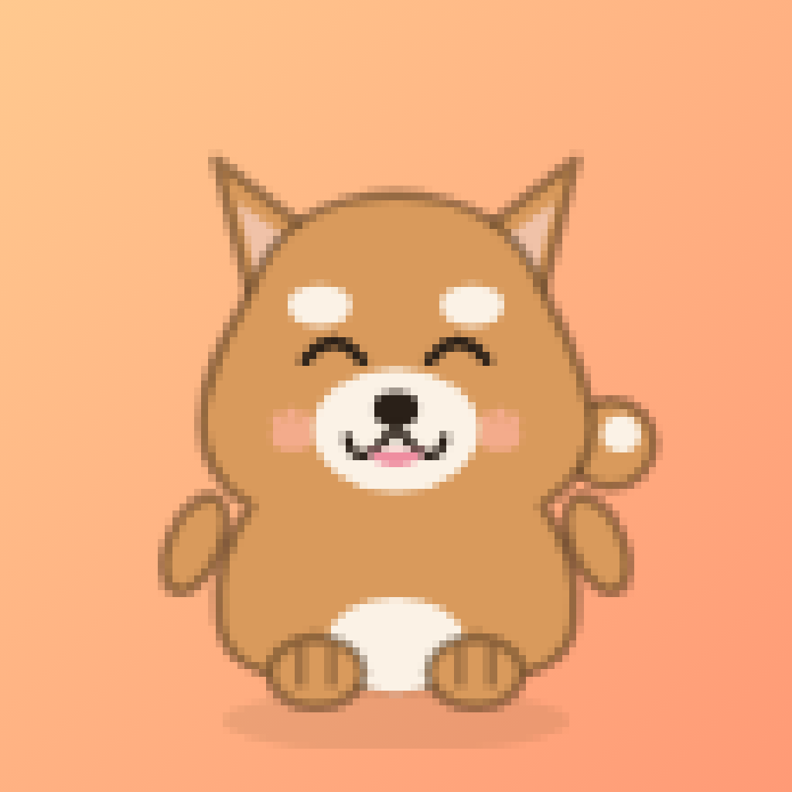

| ✓ | 頭身 約2:1・丸フォルム — ベビースキーマで保護本能を刺激 |
| ✓ | つぶらな目＋ハイライト |
| ✓ 新 | ほっぺの赤み（常時） — 喜ぶと濃く、しょんぼり時は消える |
| ✓ 新 | 呼吸アニメ — 何もしなくても3.4秒周期でゆっくり呼吸（Finchの「生きてる感」設計） |
| ✓ | なでると反応（揺れ・はずみ） |
| ⏩ | 手描きの線ゆらぎ・まばたき — v1.1で実験 |

ほっぺ追加後のホーム画面
マーケティング調査にもとづく確定方針：「暖色 × ゆるかわ × 引き算」。緑系（規律・自然）のレッドオーシャンには行かない。
🌲 緑・規律ゾーン（行かない）
Forest / Flora / Focus Plant が密集。自然メタファー・ミニマル・ストイック。老舗だらけのレッドオーシャン。
🧡 暖色・愛着ゾーン（ここで戦う）
Focus Friend（全米1位）/ Finch（ARR $30M）。「罪悪感でなく、かわいい存在への責任感」で行動が変わる側。本アプリは最初からこちら側。
全画面ダークモードは v1.1（睡眠系ですら非対応だと批判される時代）
| ✓ | 頭身 約2:1・丸フォルム — ベビースキーマで保護本能を刺激 |
| ✓ | つぶらな目＋ハイライト |
| ✓ 新 | ほっぺの赤み（常時） — 喜ぶと濃く、しょんぼり時は消える |
| ✓ 新 | 呼吸アニメ — 何もしなくても3.4秒周期でゆっくり呼吸（Finchの「生きてる感」設計） |
| ✓ | なでると反応（揺れ・はずみ） |
| ⏩ | 手描きの線ゆらぎ・まばたき — v1.1で実験 |
ほっぺ追加後のホーム画面

採用 ✅
柴犬の顔・笑顔・ほっぺ
控え
肉球はブランドモチーフとして継続
調査結果：カジュアル・コンシューマー系アプリでは「フレンドリーなキャラ顔」アイコンの勝率が高い。最小サイズでも表情が読める・支配的要素が1つ、のセオリーにも合致。公開後にストアのA/Bテストで肉球版と比較検証（アイコンはCVRが2桁%動く変数）。
| ❌ セッション失敗 | ⭕ ちょっとしょんぼりしてる… | ペットの感情を主語にする。命令しない・責めない・つぎを約束する。ひらがな優先。 |
| ❌ スマホを置いてください | ⭕ スマホをふせて、まっててね | |
| ❌ 連続記録が途切れました | ⭕ つぎはきっとだいじょうぶ！ |
「スマホを置くと、育つ。」
ホーム＋大コピー（3〜5語）
「30分の おさんぽから」
おさんぽ画面
「ぜんぶ無料で30種コンプ」
図鑑＋広告ゼロ訴求